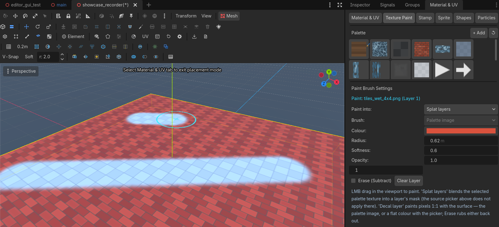
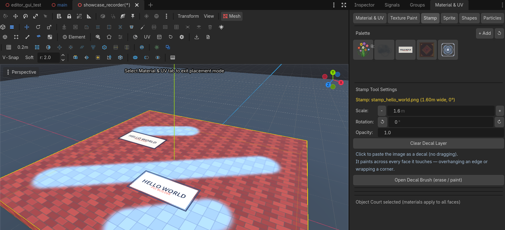
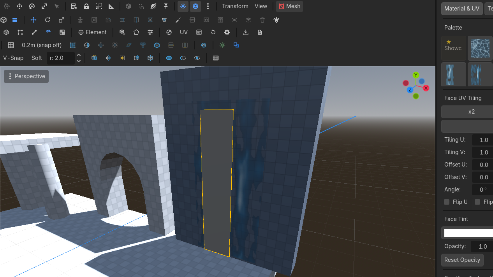

Paint & stamps
Up to eight splat layers per face, a paintable decal layer for stamps, and a sprite placer on B.
Splatting
The Material dock's paint mode. Up to 8 layers per face. Brush the blend between two (or more) albedos — grass into rock, dirt into tile.

Decal stamps
A stamp is a PNG painted into the surface, not a node hovering over it, and it is a single click — no dragging, no stroke: pick a tile pattern or a magic circle and click it onto a wall or a floor. Click to paste (no dragging): it lands in the face's decal layer at 256 texels/m — the same uniform density as the splat masks — and it keeps its own colors and alpha 1:1. The layer is cropped to the area you actually paint and grows as you spread out, so a stamp is as crisp on a 32 m courtyard floor as on a 2 m panel; the source image is resampled to the footprint (interpolated up, filtered down) rather than dropped to the nearest texel.
Because it is pixels, a stamp can span several faces: overhang a floor tile's edge, continue onto the neighbouring wall, cover a whole staircase side. It paints only faces its plane is roughly parallel to, so a stamp never smears sideways down a perpendicular wall; stamp and brush sizes are metres on screen, whatever the mesh's own scale.
The decal layer is paintable on its own, and it is the same layer stamps land in:
- Brush → Color paints a flat colour with the editor's colour picker (the ring wears the colour).
- Brush → Palette image dabs the selected texture as pixels — how you touch up or extend a decal by hand.
- Erase rubs either back out, including parts of a stamp.
- Radius, softness and opacity behave as they do for splatting; the Stamp tab's Open Decal Brush button jumps straight to these controls.
[note] The Brush row belongs to the decal layer: Paint into → Splat layers always paints the selected palette texture into a layer's mask, so the row is disabled (and says so) while that target is chosen. Palette image is the default source.
[note] Decal density is per face. The decal image is cropped to the area you actually painted and holds 256 texels/m — until that area gets big: past the window's caps (4096 px per axis, 32 MB of texels) the density falls so the paint never has to be dropped, and a 60 m floor painted across 25 m lands around 130 texels/m. The overlay's readout says what the face you are hovering gives you (Decal: 133 texels/m), and a stamp on its own — a small painted span — always keeps the full density. Large painted areas belong in splat layers; the decal layer is for stickers and dabbed detail.
Clear Layer (paint panel) clears the decal layer whenever the brush is pointed at Decal; Clear Decal Layer (stamp panel) wipes all of it at once. Every one of those actions is undoable.
Retro export bakes stamps into unique tiles; unpainted tiles reuse the base texture. Modern .glb export either bakes the whole stack into per-face textures or ships it as data — see Splatting in a modern .glb.

Sprite placer
B arms the placer. A carousel of billboard textures, raise and scale while placing. Good for trees, candles, distant props. Name prefix sprite/billboard/tree/… also marks a MeshInstance3D as a billboard at export.
While placing: drag to raise the billboard off the surface — a green line marks the ground anchor and the overlay shows the offset in metres — then move left/right to scale (the overlay shows width x height in metres plus the scale multiplier).
Asset categories
Sprites, stamps and paint textures live in separate pickers — a tree image never shows up in the stamp picker. Classification is by folder (.../sprites/, .../stamps/, .../particles/, .../textures/), then by name prefix (sprite_, stamp_, particle_, tree_, ...). Add your own by dropping files into res://materials/sprites/, res://materials/stamps/ or res://materials/textures/ — the plugin's bundled folder is never touched.
Scroll
Covered on Materials. A waterfall is a plane with scroll speed, plus an optional particle emitter at the lip.

The scroll speed exports as data (retro: per-meshuv_scroll; modern GLB:poi_uv_scrollin the material's glTF extras) — the consumer appliesuv(t) = uv(0) + t · speed; the recipes live on Export & retro. The retro bake exempts a scrolling face from the tile atlas (it keeps its own texture — that is what slides), and a scrolling face must not also be splat-painted: paint bakes to a static tile.
A modern .glb export cannot carry a custom shader. Choose Modern paint → Bake into textures (each painted face becomes its own texture — any engine shows your paint) or Include splat data (masks and decal channels ship as sidecar PNGs plus apoi_splatrecord in the material extras; see Splatting in a modern .glb for the consumer recipe). To flatten paint inside Godot itself instead of at export, the repository'sbake_splat.shscript does exactly that — reference it or script your own.
[note] Splat paint and LightmapGI now coexist on one mesh. Masks travel in their own vertex channel (CUSTOM0), so UV2 — the channel a lightmap unwrap lives in — is never touched by painting. Unwrap it from the UV editor's Lightmap button (it also flips the mesh to GI Mode: Static), bake the LightmapGI, and keep painting: the paint will not disturb the bake's UVs.
Transparent surfaces refuse paint. A billboard sprite or any alpha-blended material loses its alpha the moment it is converted to a splat (the conversion keeps albedo/colour/roughness only), so painting is REFUSED before anything changes: the brush ring goes grey, the overlay names the reason (transparent material), and strokes and stamp clicks on such faces are no-ops. A stamp spanning several faces paints only the opaque ones.
To see what a face's paint looks like up close, the UV editor's Splat masks channel shows the composited paint for the selected face (read-only — that space is written by painting, not by hand). UV1 (Texture) and UV2 (Lightmap) are both editable channels — see UV editor.
Two brush behaviours to know while this is in alpha: painting small faces runs noticeably laggier than big ones, and fast drags come out dotted — dab spacing follows stroke events, not distance. Both have workarounds and a planned fix on Known issues.